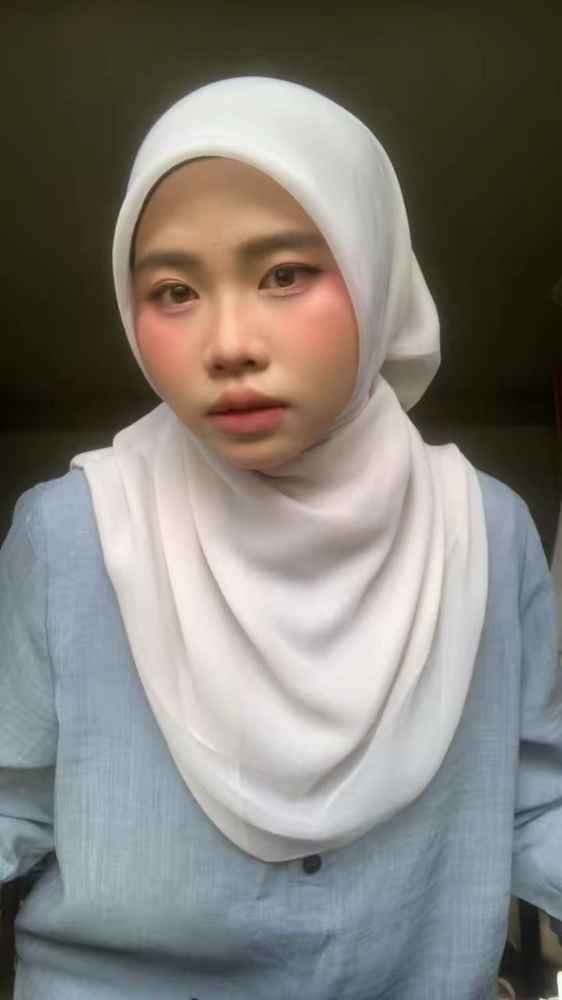

ABOUT MYSELF
lovely.~`
My name is Urmila As Shyiken Binti Sanusi, but most people call me Miela.

I was born on 24 April 2005 at Hospital Selayang, Selangor.
I live at Felda Bukit Sagu 1, Kuala Kuantan, Pahang.
I am studying Information Management at UiTM Kelantan.

I love spreading positive energy and new experiences.

My hobbies include Korean shows & lipcare collecting.